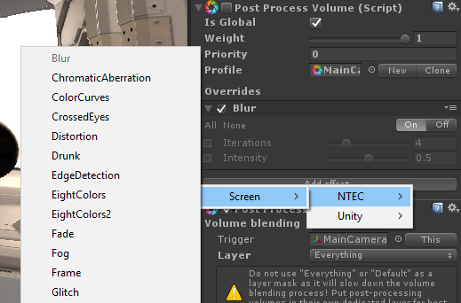
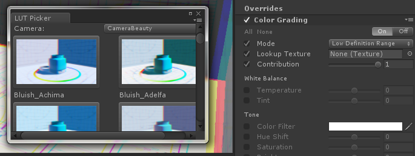
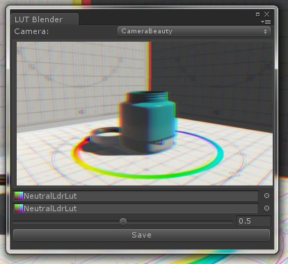

Installation
- Import PPSv2 using Package Manager - Window - > Package Manager -> All -> Post-processing -> Install
- Download and import Post Processing Effects
Congratulations! You can now add NTEC effects to Post Processing Profiles!
Picker
- Add Post Processing Volume to a camera.
- Add Unity Color Grading effect to the Volume profile.
- Set effect Mode to Low Definition Range.
- Open picker (Window/Post Processing Effects/LUT Picker), select camera and find the most suitable LUT texture.
Blender
- Add Post Processing Volume to a camera.
- Add Unity Color Grading effect to the Volume profile.
- Set effect Mode to Low Definition Range.
- Open blender (Window/Post Processing Effects/LUT Blender), select camera.
- Select LUT textures and blend them.
- Save new texture, You can save it inside PPU_LUTs folder, so You texture will be avaiable in LUT Picker.